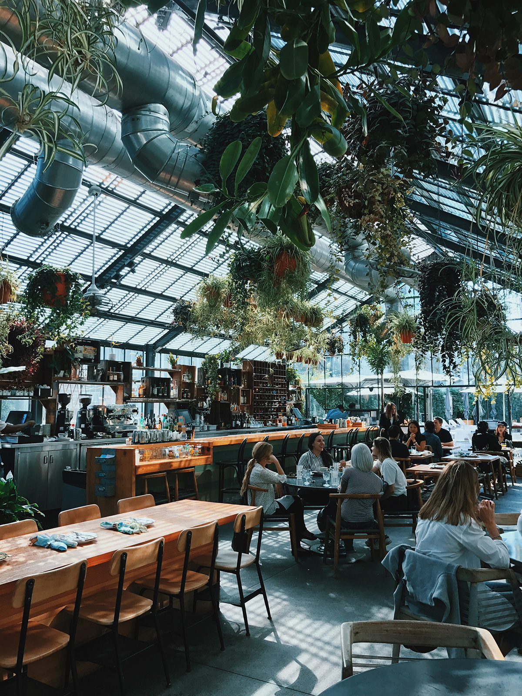

Who we are
Caffè della Terra is inspired by an Italian community of coffee loving individuals that refuse to compromise when it comes to their coffee and its overall impact on the environment from farm to cup. We are committed to the belief that food and drink should come from sources that contribute to healthy ecosystems, soil and air, instead of the modern norm that does quite the opposite. In light of this, we are a cafe that utilizes organically and sustainably grown ingredients for our whole menu from the coffee that we pour to the food we make.
